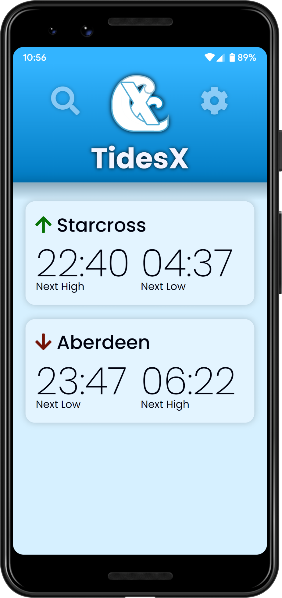

7-day tide predictions • Live height
600+ locations • Moon phase
Completely free and open-source
• 7-day tide predictions
• Live height
• 600+ locations
• Moon phase
• Free and open-source

Why choose TidesX?
While there are other tide information apps available, they look dated and feel clunky and slow. TidesX was created to provide a beautiful yet functional alternative to these old apps. Built with state-of-the-art and modern web technologies, TidesX is not only fast and reliable but also offers a download size a fraction of those of its rivals thanks to our use of next-generation technologies such as Trusted Web Activites.
Features
TidesX offers everything you might need to know about the tides, including:
7-day tide predictions so you can prepare for the week ahead
600+ UK locations so no matter where you are, you can check the tides
Live height and current tide direction
Moon phase
Geolocation so you can easily find your closest location
How does TidesX work?
Every time you look for accurate tidal information on TidesX, we send a request straight to the UK Hydrographic Office to obtain the most up-to-date tidal predictions for today and the week ahead. These are sent to your device in an average of just 100ms, more than twice as fast as other available tide times apps.
How much does TidesX cost?
TidesX is and will always be completely free. In addition, we have no invasive ads to detract from your experience, allowing for a cleaner and less cluttered interface. As an open-source and free project, our goal is to provide the best possible user experience for anyone interested in the UK tide times, and this is always our priority.
Where can I get it?
If you're using an Android device, you can get it straight from the Google Play store. TidesX is not on the iOS App Store due to technical limitations, but you can install it as a web app by visiting the application page and adding it to your home screen. This also works on Android, but the Play Store version is recommended.